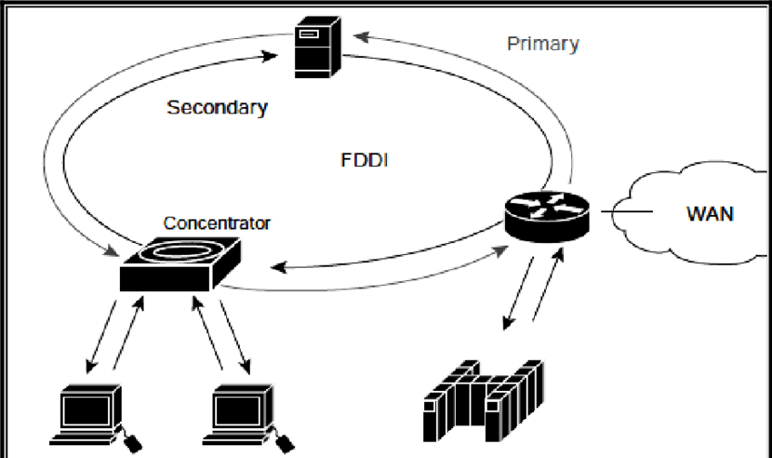

ANCHO DE BANDA
En computación de redes y en biotecnología, ancho de banda digital, ancho de banda de red o
simplemente ancho de banda es la medida de datos y recursos de comunicación disponible o consumida
expresados en bit/s o múltiplos de él como serían los Kbit/s, Mbit/s y Gigabit/s.

En su forma más simple, el ancho de banda es la capacidad de transferencia de datos, en otras
palabras, la cantidad de datos que se pueden mover de un punto a otro en cierta cantidad de tiempo.
El tener una comunicación de datos de punto a punto implica dos cosas:
Un conjunto de conductores eléctricos utilizados para hacer posible la comunicación a bajo nivel.
Un protocolo para facilitar la comunicación de datos confiable y eficiente.
CARACTERISTICAS
Características eléctricas estandarizadas (tales como el número de conductores, niveles de voltaje,
velocidades de señales, etc.).
Características mecánicas estandarizadas (tales como el tipo de conector, tamaño de la tarjeta,
formato físico, etc.).
Protocolo estándar.
La palabra "estandarizado" es importante porque los buses son la principal forma en la que diferentes
componentes de software se juntan. Los buses permiten la interconexión del hardware hecho por
diferentes fabricantes; sin estandarización, esto no sería posible. Aún en situaciones donde un bus
es propiedad de un fabricante, la estandarización es importante porque permite a ese fabricante
implementar más fácilmente diferentes componentes usando una interfaz común, el bus mismo.
Ejemplos de buses
No importa dónde en el computador revise, habrá buses. He aquí algunos de los más comunes:
Buses de almacenamiento masivo (ATA y SCSI).
Redes (Ethernet y Token Ring).
 Los buses de memoria (PC133 y Rambus®).
Buses de expansión (PCI, ISA, USB).
Los buses de memoria (PC133 y Rambus®).
Buses de expansión (PCI, ISA, USB).
MEDICION
La medición del ancho de banda se realiza normalmente mediante software o firmware y una interfaz de
red. Entre las herramientas de medición de ancho de banda tenemos Test TCP (TTCP) y PRTG Network
Monitor, por ejemplo.
TTCP mide el rendimiento en una red IP entre dos hosts. Un host es el receptor y, el otro, el
remitente. Cada lado muestra el número de bytes transmitidos y el tiempo que tarda cada paquete en
completar el trayecto de ida.
PRTG proporciona una interfaz visual y gráficos para medir las tendencias de ancho de banda durante
largos períodos de tiempo, y es capaz de realizar cálculos sobre el tráfico entre diferentes
interfaces.
Normalmente, para medir el ancho de banda, se calcula la cantidad total de tráfico enviado y recibido
en un período de tiempo específico. Los resultados se expresan en forma de una cifra por segundo.
Otro método para medir el ancho de banda consiste en contar el tiempo que se tarda en transferir uno
o varios archivos de tamaño conocido. El resultado se convierte a bps al dividir el tamaño de los
archivos por la cantidad de tiempo necesario para completar la transferencia. La mayoría de las
pruebas de velocidad de internet utilizan este método para calcular la velocidad de conexión del
equipo de un usuario a internet.
TASA DE TRASNFERENCIA
La tasa de transferencia se refiere a la medida real del ancho de banda, En un momento dado del día,
Usando rutas de internet específicas, y al transmitirse un conjunto específicos de datos.
Desafortunadamente, por varios motivos, la tasa de transferencia a menudo es mucho menor que el ancho
de banda digital máximo posible del medio utilizado.
A continuación se detallan algunos de los factores que determinan la tasa de transferencia:
Dispositivos de internetworking.
Tipos de datos que se transfiere
Topología de la red.
Cantidad de usuarios en la red.
Computador del usuario.
Computador servidor.
Estado de alimentación.
TECNOLOGIA DE REDES
Una red es una configuración de computadora que intercambia información. Pueden proceder de una
variedad de fabricantes y es probable que tenga diferencias tanto en hardware como en software, para
posibilitar la comunicación entre estas es necesario un conjunto de reglas formales para su
interacción.
A estas reglas se les denominan protocolos.
Un protocolo es un conjunto de reglas establecidas entre dos dispositivos para permitir la
comunicación entre ambos.
Token Ring
Es una arquitectura de red desarrollada por IBM en los años 1970 con topología lógica en anillo y
técnica de acceso de paso de testigo, usando un frame de 3 bytes llamado token que viaja alrededor
del anillo. Token Ring se recoge en el estándar IEEE 802.5. En desuso por la popularización de
Ethernet; actualmente no es empleada en diseños de redes.

Ethernet
Es un estándar de redes de área local para computadores, por sus siglas en español Acceso Múltiple
con Escucha de Portadora y Detección de Colisiones (CSMA/CD). Su nombre procede del concepto físico
de éter (ether, en inglés). Ethernet define las características de cableado y señalización; de nivel
físico y los formatos de tramas de datos del nivel de enlace de datos del modelo OSI. Ethernet se
tomó como base para la redacción del estándar internacional IEEE 802.3, siendo usualmente tomados
como sinónimos. Se diferencian en uno de los campos de la trama de datos. Sin embargo, las tramas
Ethernet e IEEE 802.3 pueden coexistir en la misma zona.
Interfaz de datos distribuida por fibras(FDDI)
La interfaz de datos distribuida por fibra (en inglés: Fiber Distributed Data Interface, también
conocido por sus siglas de FDDI), es un conjunto deestándares ISO y ANSI para la transmisión de
datos en redes de computadoras de área extendida(WAN) o de área local (LAN), mediante cables de
fibra óptica. Se basa en la arquitectura Token Ring y permite una comunicación tipo dúplex
(completo). Dado que puede abastecer a miles de usuarios, una LAN FDDI suele ser empleada como
backbone para una red de área amplia (WAN).

También existe una implementación de FDDI en cables de hilo de cobre, conocida como CDDI. La
tecnología de Ethernet a 100 Mbps (100BASE-FX y 100BASE-TX) está basada en FDDI.
Adipisicing elit. Architecto